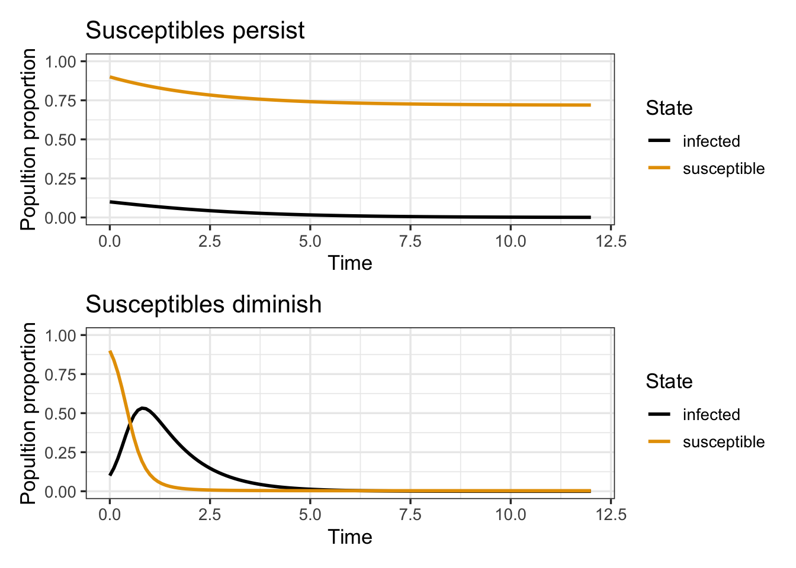

graph LR;
S[Susceptible] -->|Transmission| I[Infectious]
I -->|Recovery| R[Recovered]
Example Quarto Document
Illustrating Reproducible Reports
Abstract
This is an example Quarto document that demonstrates how to use the quarto package to create a reproducible report. The document is written in a combination of Markdown and R code. The R code is executed and the results are included in the final report. We also use the Mermaid framework to create diagrams.
Overview
This is an example Quarto document that demonstrates how to use the quarto package to create a reproducible report. The document is written in a combination of Markdown and R code. The R code is executed and the results are included in the final report. We also use the Mermaid framework to create diagrams.
Figures, Diagrams, and Equations
Figure 1 shows a stock photo of an epidemiologist analyzing data on COVID-191.

The SIR model diagram is shown in Figure 2.
The corresponding equations are
\[ \begin{aligned} \frac{dS}{dt} &= -\beta S I \\ \frac{dI}{dt} &= \beta S I - \gamma I \\ \frac{dR}{dt} &= \gamma I \end{aligned} \tag{1}\]
Table 1 shows the parameters of the SIR model in Equation 1.
| Parameter | Meaning |
|---|---|
| \(\beta\) | Infection rate |
| \(\gamma\) | Recovery rate |
For more on mathematical modeling of infectious diseases, see (Brauer, Castillo-Chavez, and Castillo-Chavez 2012).
Code
We use the deSolve package to solve the SIR model. The following code simulates the SIR model for two different values of the basic reproduction number \(R_0\).
sir_model <- function(t,state,parameters){
with(as.list(c(state,parameters)),{
dx <- -R0*x*y
dy <- R0*x*y - y
list(c(dx,dy))
})
}
state <- c(x=0.90,y=0.1)
times <- seq(0,12,by=0.1)
sim1 <- as.data.frame(ode(y=state,times=times,func=sir_model,parms=c(R0=0.8)))
sim2 <- as.data.frame(ode(y=state,times=times,func=sir_model,parms=c(R0=5.6)))Figure 3 shows the SIR model curves for two different values of the basic reproduction number \(R_0\).
Show the code
p1 <- sim1 |>
rename(susceptible=x,infected=y) |>
pivot_longer(cols=c(susceptible,infected),names_to="state",values_to="population") |>
ggplot(aes(x=time,y=population,color=state)) +
geom_line(lwd=1) +
scale_color_colorblind() +
ylim(c(0,1)) +
labs(x="Time",y="Popultion proportion",
color = "State",
title="Susceptibles persist")
p2 <- sim2 |>
rename(susceptible=x,infected=y) |>
pivot_longer(cols=c(susceptible,infected),names_to="state",values_to="population") |>
ggplot(aes(x=time,y=population,color=state)) +
geom_line(lwd=1) +
scale_color_colorblind() +
ylim(c(0,1)) +
labs(x="Time",y="Popultion proportion",
color = "State",
title="Susceptibles diminish")
(p1 / p2)

References
Brauer, Fred, Carlos Castillo-Chavez, and Carlos Castillo-Chavez. 2012. Mathematical Models in Population Biology and Epidemiology. Vol. 2. 40. Springer.
Expand for Session Info
─ Session info ───────────────────────────────────────────────────────────────
setting value
version R version 4.3.2 (2023-10-31)
os macOS Sonoma 14.3.1
system aarch64, darwin20
ui X11
language (EN)
collate en_US.UTF-8
ctype en_US.UTF-8
tz America/New_York
date 2024-02-25
pandoc 3.1.12.1 @ /opt/homebrew/bin/ (via rmarkdown)
quarto 1.4.550 @ /usr/local/bin/quarto
─ Packages ───────────────────────────────────────────────────────────────────
package * version date (UTC) lib source
deSolve * 1.40 2023-11-27 [1] CRAN (R 4.3.1)
dplyr * 1.1.4 2023-11-17 [1] CRAN (R 4.3.1)
forcats * 1.0.0 2023-01-29 [1] CRAN (R 4.3.0)
ggplot2 * 3.5.0 2024-02-23 [1] CRAN (R 4.3.1)
ggthemes * 5.1.0 2024-02-10 [1] CRAN (R 4.3.1)
lubridate * 1.9.3 2023-09-27 [1] CRAN (R 4.3.1)
patchwork * 1.2.0 2024-01-08 [1] CRAN (R 4.3.1)
purrr * 1.0.2 2023-08-10 [1] CRAN (R 4.3.0)
readr * 2.1.5 2024-01-10 [1] CRAN (R 4.3.1)
sessioninfo * 1.2.2 2021-12-06 [1] CRAN (R 4.3.0)
stringr * 1.5.1 2023-11-14 [1] CRAN (R 4.3.1)
tibble * 3.2.1 2023-03-20 [1] CRAN (R 4.3.0)
tidyr * 1.3.1 2024-01-24 [1] CRAN (R 4.3.1)
tidyverse * 2.0.0 2023-02-22 [1] CRAN (R 4.3.0)
[1] /Library/Frameworks/R.framework/Versions/4.3-arm64/Resources/library
──────────────────────────────────────────────────────────────────────────────Footnotes
Coronavirus disease 2019 (COVID-19) is a contagious disease caused by the virus SARS-CoV-2.↩︎